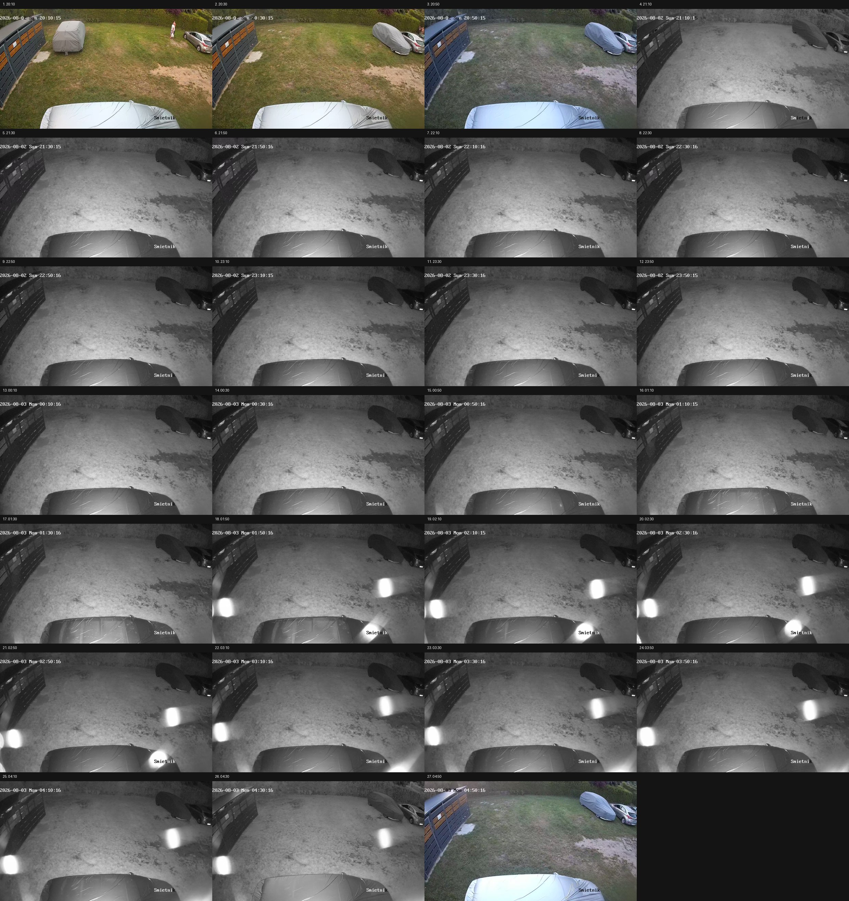
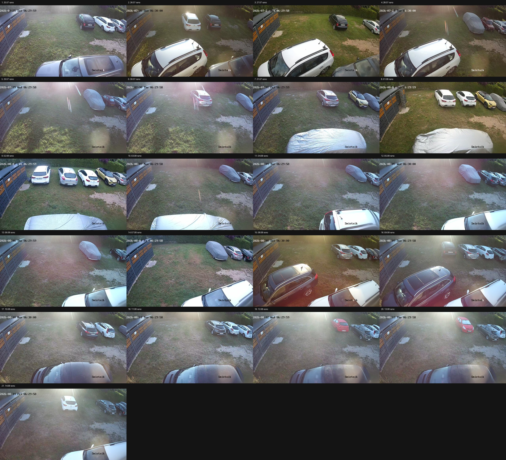

Cala noc 2/3 sierpnia — 27 kadrow na jednym obrazku
Co 20 minut, od 20:10 do 05:00. Kamera Smietnik, caly kadr.
Powieksz palcami i przejrzyj: czy Twoja Insignia stoi tam w nocy i o ktorej godzinie znika.
Jesli stoi wieczorem, a rano jej nie ma — wiemy, ze odjechala przed 6:00 i mamy wlasciwa noc.
Jesli nie ma jej wcale — auto stalo poza zasiegiem tej kamery.

Ponizej dla porownania: 21 porankow z calego archiwum, po jednym z kazdego dnia.
